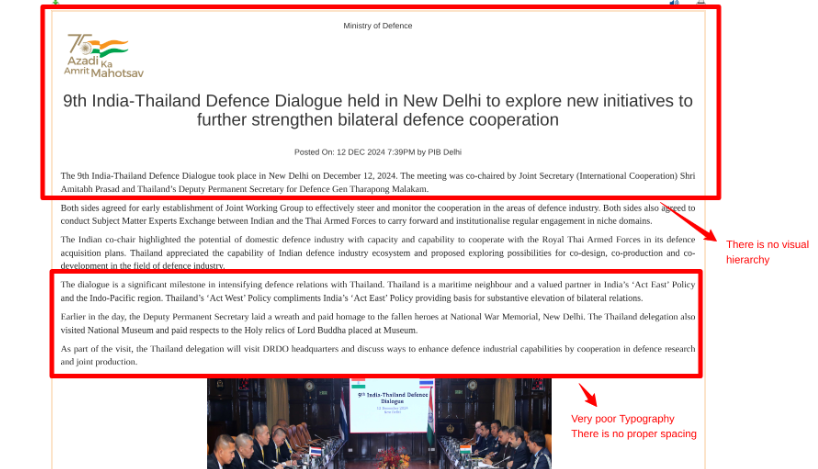

Identified Problems
Using the Awesome Screenshot tool, I have highlighted key problems with the design and functionality of the website.
- Cluttered Layout: The page lacks a proper visual hierarchy, making it difficult to distinguish between headings, text, and images.
- Poor Typography: Font size is small, with inconsistent line spacing, which affects readability.
- Non-Responsive Design: The website does not adapt well to smaller screens, creating a poor mobile user experience.
- Image Placement: Images are not aligned properly and disrupt the flow of the text.
- Lack of Accessibility: Missing ALT tags for images and insufficient contrast for visually impaired users.
Annotated Screenshots
Below are the screenshots taken with comments:
- 
-